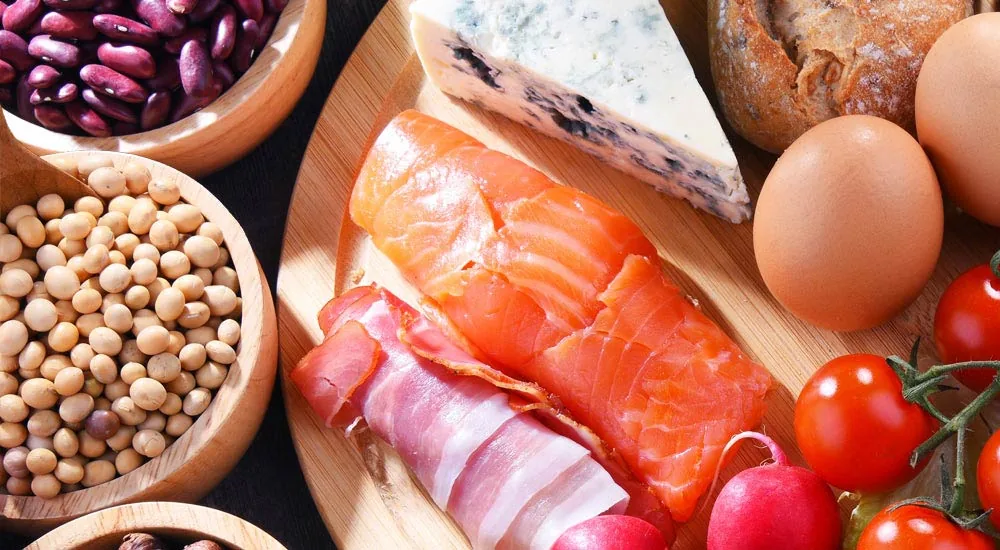

Pflanzliches oder tierisches Eiweiß: Welches Protein für den Muskelaufbau?

Welches Protein unterstützt den Muskelaufbau optimal? Die Antwort auf diese Frage könnte entscheidend für deine Fitnessreise sein. Ist pflanzliches oder tierisches Eiweiß besser für den Muskelaufbau?
Wir bekommen in unserer Tätigkeit als selbstständige Vertriebspartner von PM-International / FitLine Produkte immer wieder mit, dass viele sich nicht optimal ernähren, während sie Muskulatur aufbauen wollen. Wir vergleichen darum in diesem Artikel einmal die Aminosäurezusammensetzung und biologische Wertigkeit beider Proteinquellen und zeigen die jeweiligen Vorteile auf. Zudem geben wir dir praktische Tipps zur Integration von Protein in deine Ernährung, um deine Fitnessziele effektiver zu erreichen.
Pflanzliche und tierische Eiweiße im Vergleich
Pflanzliches und tierisches Eiweiß unterscheiden sich in ihrer Aminosäurezusammensetzung und biologischen Wertigkeit.
Diese Unterschiede sind entscheidend, insbesondere wenn es um den Muskelaufbau geht.
Tierisches Eiweiß, wie sie in Fleisch, Fisch, Eiern und Milchprodukten vorkommen, bieten oft ein vollständiges Profil an essentiellen Aminosäuren, die der Körper benötigt, um Muskeln effektiv aufzubauen und zu reparieren.
Im Gegensatz dazu enthalten pflanzliche Eiweiße, wie sie in Hülsenfrüchten, Nüssen, Samen und Getreide zu finden sind, häufig unvollständige Aminosäurenprofile. Das bedeutet, dass sie nicht alle essentiellen Aminosäuren in ausreichenden Mengen bereitstellen. Dennoch haben pflanzliche Eiweiße ihre eigenen Vorzüge, die nicht übersehen werden sollten.
Unterschiede zwischen pflanzlichen und tierischen Eiweißen
Ein wesentlicher Unterschied zwischen pflanzlichen und tierischen Eiweißen liegt in der biologischen Wertigkeit.
Diese Wertigkeit beschreibt, wie gut der Körper das Protein aufnehmen und nutzen kann. Tierische Eiweiße haben in der Regel eine höhere biologische Wertigkeit, was bedeutet, dass sie effizienter vom Körper verwertet werden können. Dies ist besonders wichtig im Sport und für aktive Personen, die auf eine ausreichende Proteinzufuhr angewiesen sind, um ihre Leistung zu optimieren.
Je höher die biologische Wertigkeit ist, umso mehr Eiweiß kann der Körper anabol nutzen (für den Aufbau eigener Körperstrukturen), während dem bei einer niedrigen biologischen Wertigkeit mehr vom Eiweiß nur zu Energie verbrannt wird, also katabol verstoffwechselt wird. Wir essen dann zwar vielleicht viel Eiweiß, der Körper kann davon aber nur wenig für sich selbst, wie für Reparaturprozesse, nutzen.
Dies ist unterm Strich eine schlechte Bilanz für den Körper, da die Eiweißverdauung viel Energie und Aufwand erfordert und auch viele Stoffwechselendprodukte hinterlässt, die den Körper belasten. Der häufige Verzehr von Proteinen mit einer niedrigen biologischen Wertigkeit und ohne sinnvolle Ergänzung weiterer Proteine kann sich daher auf Dauer sehr ungünstig auswirken. Ein Problem, das schnell Veganer betrifft.
Es ist also aus unterschiedlicher Sicht sinnvoll, auf die Qualität der Proteine zu achten, die wir essen.
Vorteile pflanzlicher Proteine
Pflanzliche Eiweiße bieten jedoch zahlreiche andere Vorteile.
Sie sind oft reich an Ballaststoffen, Vitaminen und Mineralstoffen, die zur allgemeinen Versorgung dieser wichtigen Stoffe beitragen.
Ein weiterer Vorteil ist der niedrigere Cholesterinspiegel, den viele pflanzliche Eiweiße im Gegensatz zu den tierischen mit sich bringen. Sie enthalten also weniger gesättigte Fette.
Zudem sind pflanzliche Eiweiße meist leichter verdaulich und können eine hervorragende Ergänzung zu einer ausgewogenen Ernährung darstellen.
Vorteile tierischer Proteine
Tierische Eiweiße wie Fleisch haben, wie bereits erwähnt, eine höhere biologische Wertigkeit und sind somit reich an essentiellen Aminosäuren.
Diese Eigenschaften machen sie zu einer bevorzugten Wahl für viele Menschen, die gezielt Muskeln aufbauen möchten. Tierische Produkte liefern nicht nur Protein, sondern auch einige Nährstoffe wie Vitamin B12, Eisen oder Calcium. Insbesondere für Sportler sind tierische Eiweiße eine effektive Möglichkeit, den täglichen Proteinbedarf zu decken und die Regeneration nach dem Training zu unterstützen. Wenn du mehr zum optimalen Zeitpunkt der Eiweißaufnahme wissen willst, lies übrigens auch gern unseren Artikel zum Thema vor oder nach dem Sport essen?
Die Wahl zwischen pflanzlichen und tierischen Eiweißen hängt letztlich von individuellen Vorlieben und Ernährungszielen ab.
Beide Proteinquellen haben ihre Stärken und können effektiv in eine ausgewogene Ernährung integriert werden, am besten natürlich in Kombination! Dazu kommen wir später noch einmal.
Hier haben wir dir einige der wichtigsten Eiweißquellen für die Ernährung aufgelistet mit den Angaben der Eiweißmenge pro 100 g Lebensmittel. Beachte, dass die Wertigkeit des Eiweißes dabei nicht einbezogen ist, und der Wert je nach Zubereitung natürlich schwankt:
Eiweißreiche Pflanzliche Lebensmittel
- Sojabohnenmehl: ca. 41 g
Vollständiges Protein. Reife, gegarte Bohnen haben nur 15 g Protein. - Lupinenmehl: ca. 38 g
Vielseitig einsetzbar in der Küche und hochwertiges Protein - Hanfsamen: ca. 30 g
Enthält alle neun essentiellen Aminosäuren. Hanfsamen-Proteinpulver kann 50 g Protein enthalten. - Linsen gekocht: ca. 11 g
Hoher Ballaststoffgehalt - Erdnüsse: ca. 30 g
Reich an gesunden Fetten - Kichererbsenmehl: ca. 19 g
Vielseitig in der Küche einsetzbar. Gekochte Kichererbsen ca. 9 g - Tempeh: ca. 19 g
Fermentierte Sojabohnen, reich an Milchsäurebakterien - Mungobohnen frisch: ca. 23 g
Gut verdaulich und nährstoffreich. Gekocht oder gesprosst reduziert sich die Prozentuale Menge des Eiweißes. - Chia-Samen und Leinsamen: ca. 21 bis 22 g
Hoher Gehalt an Omega-3-Fettsäuren (ALA) - Quinoa gekocht: ca. 4 g
Vollständiges Protein, glutenfrei
Eiweißreiche Tierische Lebensmittel
- Hart-Käse (z.B. Parmesan): ca. 29-39 g
Hoher Kalzium- und Eiweißgehalt - Hähnchenbrust: ca. 24 g
Mager und vielseitig einsetzbar - Putenbrust: ca. 20 g
Mager und proteinreich - Rindfleisch: ca. 21 - 31 g
Hoher Zink- und Eisenanteil - Fisch (z.B. Lachs, Forelle): ca. 17 bis 24 g
Enthalten in frischem Zustand und guter Aufzucht viele, wichtige Omega-3-Fettsäuren - Schweinefilet: ca. 18 - 31 g
Mager und saftig - Eier: ca. 13 g
Vollwertiges Protein
Die Rolle von Eiweißen beim Muskelaufbau
Eiweiße spielen eine entscheidende Rolle beim Muskelaufbau, indem sie die Reparatur und das Wachstum von Muskelgewebe unterstützen.
Wenn du regelmäßig trainierst, ist es wichtig, dass du deinem Körper ausreichend Eiweiße zuführst, um die Regeneration nach dem Training zu fördern und Muskelmasse aufzubauen. In diesem Abschnitt werden wir uns näher mit der Funktion von Eiweißen in deinem Körper beschäftigen und erläutern, warum sie für deine Fitnessziele unverzichtbar sind.
Baustoffe für Muskeln
Eiweiße bestehen aus Aminosäuren, die als die Bausteine des Lebens bezeichnet werden. Diese Aminosäuren sind für den Körper an vielen Stellen wichtig, da sie nicht nur für den Aufbau von Muskelgewebe benötigt werden, sondern z. B. auch für die Produktion von Hormonen und Enzymen.
Bei intensivem Training kommt es zu Mikrorissen in den Muskelfasern, die anschließend repariert werden müssen. Hier kommen die Eiweiße ins Spiel: Sie liefern die notwendigen Aminosäuren, die der Körper benötigt, um diese Schäden zu reparieren und neues Muskelgewebe aufzubauen. Eine ausreichende Zufuhr von Eiweißen ist daher entscheidend!
Die Bedeutung der Aminosäuren
Die Qualität der eiweißhaltigen Nahrungsmittel spielt dabei eine wesentliche Rolle für den Muskelaufbau.
Es gibt insgesamt 20 verschiedene Aminosäuren, von denen 9 als essentiell gelten. Das bedeutet, dass der Körper diese Aminosäuren nicht selbst bilden kann und sie über die Nahrung aufgenommen werden müssen.
Tierische Eiweiße bieten oft (aber auch nicht immer) ein vollständiges Profil dieser essentiellen Aminosäuren und sind somit besonders wertvoll für den Körper.
Pflanzliche Eiweiße hingegen enthalten häufig unvollständige Aminosäurenprofile. Das heißt, sie liefern nicht alle essentiellen Aminosäuren in ausreichenden Mengen. Dennoch können durch eine geschickte Kombination verschiedener pflanzlicher Proteinquellen auch alle benötigten Aminosäuren bereitgestellt werden.
Optimale Proteinaufnahme für den Muskelaufbau
Die optimale Proteinaufnahme variiert je nach individuellem Ziel und Aktivitätsniveau.
Um Muskeln effektiv aufzubauen, ist es entscheidend, die richtige Menge an Eiweiß zu konsumieren. Grundsätzlich wird empfohlen, dass aktive Personen etwa 1,2 bis 2,0 Gramm Eiweiß pro Kilogramm Körpergewicht pro Tag zu sich nehmen.
Diese Menge kann je nach Trainingsintensität, Alter und Geschlecht variieren. Für Frauen, die gezielt Muskeln aufbauen möchten, ist es wichtig, diese Zufuhr gleichmäßig über den Tag zu verteilen. So kann der Körper die Aminosäuren optimal nutzen und das Muskelwachstum maximieren.
Wenn du zu jeder Mahlzeit eiweißreiche Lebensmittel isst, und dann am besten noch unterschiedliche Quellen kombinierst, schaffst du super Voraussetzungen.
Die Qualität der Proteinquellen spielt natürlich eine wesentliche Rolle. Während tierische Eiweiße oft ein vollständiges Profil an essentiellen Aminosäuren bieten, können pflanzliche Eiweiße durch eine geschickte Kombination verschiedener Quellen ebenfalls alle benötigten Aminosäuren bereitstellen. Eine Ernährung, die sowohl pflanzliche als auch tierische Eiweiße in einer Mahlzeit umfasst, ist daher ideal für den Muskelaufbau.
Ein weiterer wichtiger Faktor ist der Zeitpunkt der Eiweißaufnahme. Studien haben gezeigt, dass die Einnahme von Eiweiß nach dem Training besonders vorteilhaft ist. In dieser Zeit ist der Körper besonders aufnahmefähig für Nährstoffe, und die Zufuhr von Eiweiß kann den Muskelaufbau direkt fördern. Es empfiehlt sich, innerhalb von 30 bis 60 Minuten nach dem Training eine proteinreiche Mahlzeit oder einen Snack einzunehmen. Für diesen Zweck werden von sportlich aktiven Menschen häufig und gern Protein-Shakes verwendet.
Zusätzlich zum Eiweißbedarf spielt auch das Training eine entscheidende Rolle bei der Bestimmung der optimalen Proteinaufnahme:
Krafttraining führt zu einem höheren Bedarf an Eiweißen im Vergleich zu aeroben Übungen. Je intensiver das Training, desto mehr Aminosäuren benötigt der Körper zur Reparatur und zum Aufbau neuer Muskelstruktur.
Dies gilt insbesondere auch nach intensiven Trainingseinheiten oder Wettkämpfen. In diesen Phasen ist es ratsam, die Eiweißzufuhr gezielt zu erhöhen, um eine optimale Regeneration zu gewährleisten.
Tipps zur Eiweißaufnahme über die Ernährung
Um sicherzustellen, dass du ausreichend Eiweiße in deiner Ernährung hast, kannst du verschiedene Strategien anwenden:
Beginne damit, eiweißreiche Lebensmittel in jede Mahlzeit einzubauen. Fleisch, Fisch, Eier sowie pflanzliche Quellen wie Hülsenfrüchte, Nüsse, Samen, Tofu und Tempeh sind hervorragende Optionen. Achte darauf, dass du eine Vielzahl von Proteinquellen konsumierst, um alle notwendigen Nährstoffe zu erhalten.
Zudem können Nahrungsergänzungsmittel wie Proteinshakes eine praktische Möglichkeit darstellen, deinen täglichen Bedarf zu decken. Diese Ergänzungen sind besonders hilfreich für Menschen mit einem hektischen Lebensstil oder für diejenigen, die Schwierigkeiten haben, ihre Proteinaufnahme optimal über die normale Ernährung zu erreichen.
Wer nur die essentiellen Aminosäuren ergänzen möchte, kann Produkte wie Amino Kapseln* verwenden. So kannst du in Leichtigkeit die Aufnahme dieser lebenswichtigen Stoffe erhöhen. Besonders zu empfehlen ist dies bei vegetarischer und veganer Ernährung, da durch die niedrigere biologische Wertigkeit pflanzlicher Eiweiße die Aufnahme dieser essentiellen Aminosäuren herausfordernder ist.
Kombination von pflanzlichen und tierischen Eiweißen
Die Kombination aus pflanzlichen und tierischen Eiweißen kann die Aminosäurenaufnahme maximieren.
Pflanzliches und tierisches Eiweiß gemeinsam zu verwenden hat viele Vorteile. Zum einen können Sie durch die Kombination sicherstellen, dass Sie alle notwendigen Aminosäuren in ausreichenden Mengen aufnehmen.
Während tierische Eiweiße oft alle essentiellen Aminosäuren enthalten, fehlen in vielen pflanzlichen Quellen einige dieser wichtigen Bausteine. Durch geschickte Kombinationen, wie beispielsweise Reis mit Bohnen oder Quinoa mit Nüssen, können Sie ein besseres Aminosäureprofil erreichen.
Noch sinnvoller ist es, in einer Mahlzeit sowohl tierische als auch pflanzliche Eiweiße gemeinsam zu verzehren. Die beinhalteten Aminosäuren ergänzen sich, sodass eine für den menschlichen Körper bessere biologische Wertigkeit entsteht. Man spricht dann vom Ergänzungswert.
Außerdem sind Proteine aus Pflanzen oft reich an Mikronährstoffen, Antioxidantien und sekundären Pflanzenstoffen, die eine wichtige Rolle in einer ganzheitlichen, guten Ernährung spielen. Tierische Eiweiße können diese Nährstoffe nicht bieten. Im Rahmen einer vielseitigen Ernährung ist es also sinnvoll, stets unterschiedliche, eiweißreiche Nahrungsmittel zu nutzen, abzuwechseln und zu kombinieren, auch wenn tierische Proteine ein besser verfügbares Eiweiß liefern.
Ideen zur Kombination und Aufnahme von ausreichend Eiweiß im Alltag
Besonders sinnvoll ist, wie bereits erwähnt, bei jeder Mahlzeit sowohl pflanzliche als auch tierische Eiweiße einzubauen!
Dies könnte bedeuten, dass du zu Hähnchenbrustfilet oder Fleisch eine Beilage aus Linsen oder Quinoa servierst, oder einen Salat mit Kichererbsen und Feta-Käse zubereitest. Solche Kombinationen sorgen auch für abwechslungsreiche und schmackhafte Mahlzeiten.
Zum Beispiel kannst du in dein Frühstück Quark (tierisches Protein) hinzufügen, oder deinen Smoothie mit Erbsenprotein (pflanzliches Protein) oder fertigen, pflanzlichen Proteinshakes aufwerten.
Die Verwendung von hochwertigen Proteinpulvern kann super helfen, deine tägliche Eiweißaufnahme zu optimieren. Diese Produkte sind oft einfach zuzubereiten und können in Smoothies oder Shakes integriert werden. Wie wäre es z. B., ein Whey Pulver* in dein Frühstücksmüsli dazuzugeben, um den Eiweißgehalt zu erhöhen?
Auch für solche Zwecke eignen sich Nussmehle oder auch pflanzliche Proteinmehle wie aus Lupinen oder Hanf.
Die zunehmend steigende Verfügbarkeit von hochwertigen pflanzlichen Proteinquellen eröffnet dir neue Möglichkeiten der Ernährungsgestaltung. Produkte wie Erbsenprotein, Lupinenprodukte wie Lupinenmehl oder Produkte aus Hanfsamen erfreuen sich wachsender Beliebtheit und finden immer mehr Einzug in herkömmliche Rezepturen. Durch die Erforschung dieser neuen Zutaten kannst du kreative Wege finden, um deine Mahlzeiten spannend und nährreich zu gestalten.
Achte auf Snacks, die reich an Eiweißen sind. Statt zu ungesunden Snacks zu greifen, entscheide dich für Nüsse, Samen oder proteinreiche Riegel. Oder mache auch einmal selbst Cracker aus Saaten und Nüssen. Sowas ist auch super praktisch für unterwegs.
Um sicherzustellen, dass du deine Eiweißaufnahme optimal gestaltest, ist es hilfreich, einige einfache Gewohnheiten in deinen Alltag zu integrieren:
Beginne damit, deine Einkäufe strategisch zu planen. Erstelle eine Liste, die eiweißreiche Lebensmittel umfasst, und experimentiere mit verschiedenen Rezepten, die sowohl pflanzliche als auch tierische Proteinquellen vereinen.
Plane gezielt deine Mahlzeiten für die Woche. Setze dich am Wochenende hin und überlege dir, welche Gerichte du in den kommenden Tagen zubereiten möchten.
Beobachte deine Portionsgrößen und die Verteilung der Eiweißaufnahme über den Tag. Es ist vorteilhaft, die Proteinaufnahme gleichmäßig auf die einzelnen Mahlzeiten und Snacks zu verteilen, um einen anhaltenden Aminosäurenfluss für deinen Körper zu gewährleisten. Denn Aminosäuren werden nicht lange im Körper gespeichert und sollten regelmäßig zur Verfügung stehen.
Überlege auch, in welchen Situationen du möglicherweise geneigt bist, eiweißarme Snacks oder Mahlzeiten zu wählen und plane voraus, um diese Gelegenheiten zu minimieren. Ein typisches Beispiel ist die Banane am Nachmittag, die häufig genutzt wird, wenn die Energie fehlt oder der kleine Hunger kommt. Dieser starke „Zuckerkick“ ist für viele Menschen gar nicht so sinnvoll, besonders nicht, wenn du abnehmen möchtest. Viele machen diesen Fehler und fragen sich dann: „Warum nehme ich nicht ab?“. Iss z. B. stattdessen einen Proteinriegel oder Saaten-Cracker.
Bevorzuge unbehandelte und natürliche Lebensmittel. Wenn möglich, wähle biologische Produkte oder solche aus artgerechter Tierhaltung. Diese enthalten häufig weniger Schadstoffe und mehr essentielle Nährstoffe.
Experimentiere mit neuen Rezepten und Kombinationen aus verschiedenen Kulturen, um deinen Speiseplan abwechslungsreich zu gestalten. Berücksichtige auch spezielle Kochmethoden wie Dämpfen oder Grillen, die den Nährstoffgehalt der Zutaten bewahren.
Die Zubereitung größerer Mengen an eiweißreichen Speisen, die sich gut lagern oder einfrieren lassen, ist besonders praktisch und hilft, spontane, ungesunde Essensentscheidungen zu vermeiden.
Wenn ich Bohnen oder Kichererbsen koche, mache ich gleich so viel davon, dass ich mehrfach davon essen kann. Während bei mir Gemüse immer frisch zubereitet sein muss, ist es aus meiner Sicht in Ordnung, bei solchen Lebensmitteln auch einmal auf Vorrat zu kochen. Das Gemüse oder der Salat kommt dann frisch dazu, und die Zubereitung einer hochwertigen Mahlzeit ist dann meist in 10 Minuten erledigt.
Die Rolle der individuellen Vorlieben
Natürlich hängt die Wahl zwischen pflanzlichen und tierischen Eiweißen auch von individuellen Vorlieben abhängt. Manche Menschen entscheiden sich aus ethischen Gründen für eine vegetarische oder vegane Ernährung.
In solchen Fällen ist eine sorgfältige Planung erforderlich, um sicherzustellen, dass alle notwendigen Nährstoffe gedeckt werden. Die Kombination verschiedener pflanzlicher Proteinquellen wird hier besonders relevant, um ein vollständiges Aminosäureprofil zu erreichen.
Leider beobachte ich häufig, dass besonders bei einer vegetarischen oder veganen Lebensweise die Eiweißaufnahme stark mangelhaft erfolgt und auch kein Bewusstsein und Wissen darüber besteht. Dies führt über die Jahre zu den unterschiedlichsten Problemen und Abbau von Muskulatur und Geweben. Besonders problematisch ist dies, wenn Menschen Gewicht verlieren wollen und beispielsweise unser Programm zum Abnehmen durchführen, aber vergessen, ausreichend Eiweiß zu essen, bzw. aufgrund der veganen Lebensweise nicht genug Ideen für ihre Rezepte haben.
Häufige Fragen zu pflanzlichen oder tierischen Proteinen auf einen Blick
Kann man nur mit pflanzlichem Eiweiß Muskeln aufbauen?
Ja, es ist durchaus möglich, mit pflanzlichem Eiweiß Muskeln aufzubauen. Der Schlüssel liegt darin, eine Vielzahl pflanzlicher Proteine zu kombinieren, um alle essentiellen Aminosäuren zu erhalten. Lebensmittel wie Linsen, Quinoa, Kichererbsen und Nüsse sind hervorragende Optionen, die dann aber gleichzeitig verzehrt werden müssen. Zudem können Proteinshakes auf pflanzlicher Basis eine praktische Lösung zur Unterstützung des Muskelaufbaus bieten. Gute Hersteller kombinieren pflanzliche Proteine bereits so, dass sie dir ein gutes Aminosäurenprofil liefern. Das macht eine gute Eiweißaufnahme im Alltag natürlich besonders einfach.
Eine sehr gute Lösung ist auch die Einnahme von essentiellen Aminosäuren*, die aus pflanzlichen Quellen gewonnen werden. Sie ermöglichen dir, direkt alle essentiellen Aminosäuren in dem für den Körper richtigen Verhältnis zu geben, ohne kompliziert mehrmals am Tag eiweißreiche Lebensmittel korrekt kombinieren zu müssen. Diese sind natürlich kein Ersatz für eine vollwertige, eiweißreiche Nahrung, können aber deinen Alltag erleichtern. Ich nutze die Kapseln seit vielen Jahren, zusätzlich zum Optimal-Set, das als Basisversorgung die beiden leckeren Nährstoffgetränke PowerCocktail und das Mineraliengetränk Resto beinhaltet.
Kann man tierisches Eiweiß durch pflanzliches ersetzen?
Ja, tierisches Eiweiß kann durch pflanzliches Eiweiß ersetzt werden, jedoch ist es wichtig sicherzustellen, dass die Ernährung ausgewogen ist und alle notwendigen Nährstoffe enthält. Eine Kombination verschiedener pflanzlicher Proteinquellen in einer Mahlzeit ist extrem wichtig, um die benötigten Aminosäuren bereitzustellen. Denn pflanzliche Eiweiße haben eine niedrigere, biologische Wertigkeit und manche essentiellen Aminosäuren fehlen z. T. ganz. Hierfür gelten also die gleichen Regeln und Empfehlungen wie im Absatz oben! Es reicht nicht aus, als Veganer einfach nur 1x am Tag Linsen oder Tofu mit Gemüse zu essen, und dann zu glauben, dass genug Proteine gegessen wurden.
*Proteine (Aminosäuren) tragen zur Erhaltung und Zunahme von Muskelmasse bei.